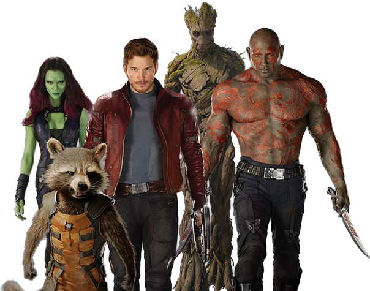
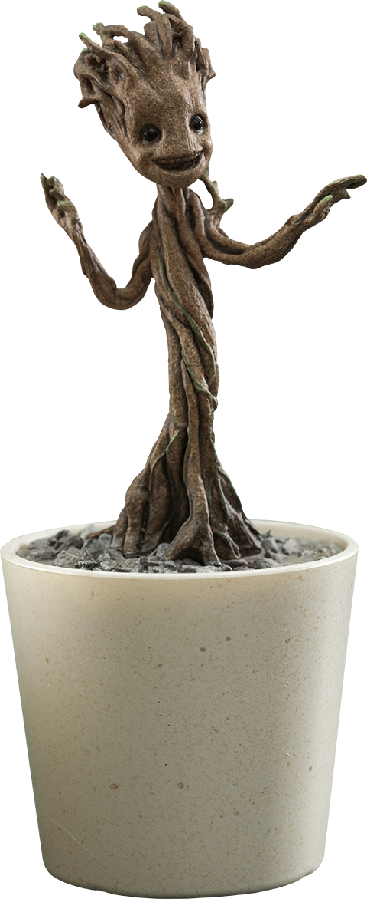

Groot é um ser alienígena da espécie Flora colossus, originário do Planeta X.
Apesar de sua aparência imponente e de falar apenas a frase “Eu sou Groot”,
ele é extremamente inteligente, sensível e leal. Sua forma de comunicação limitada
esconde uma personalidade complexa, que só é totalmente compreendida por aqueles
que convivem com ele, como seu melhor amigo e parceiro inseparável, Rocket Raccoon.
No início de sua jornada, Groot e Rocket atuavam como caçadores de recompensas pela galáxia,
vivendo de missões perigosas e interesses próprios. Tudo muda quando eles cruzam o caminho de
Peter Quill, também conhecido como Senhor das Estrelas, e acabam formando um grupo improvável ao
lado de Gamora e Drax the Destroyer. Juntos, eles se tornam os Guardiões da Galáxia.

Durante a luta contra o poderoso vilão Ronan the Accuser, que ameaça destruir o planeta Xandar
com o poder de uma Joia do Infinito, Groot demonstra sua verdadeira natureza heroica.
No momento mais crítico da batalha, ele se sacrifica para salvar seus amigos, envolvendo-os
com seu próprio corpo em forma de escudo. Antes de se desintegrar, ele pronuncia uma frase que
marca profundamente o grupo: “Nós somos Groot”, mostrando que havia se tornado parte de uma família.
Após esse sacrifício, um pequeno galho de Groot é plantado por Rocket, dando origem a uma nova versão
do personagem: o Baby Groot. Embora seja fisicamente menor e mais ingênuo, ele mantém a essência do
Groot original. Com o tempo, ele cresce e passa por diferentes fases, incluindo a fase adolescente,
marcada por um comportamento mais rebelde e desinteressado.

Ao longo de suas aventuras com os Guardiões, Groot continua demonstrando coragem,
lealdade e um forte senso de amizade, mesmo sem se comunicar de forma convencional.
Sua presença é essencial para a equipe, não apenas por sua força e habilidades únicas,
mas também pelo coração puro que possui.
Assim, Groot se torna muito mais do que um simples guerreiro: ele é o símbolo de que
ações valem mais do que palavras — mesmo quando essas palavras são sempre as mesmas.